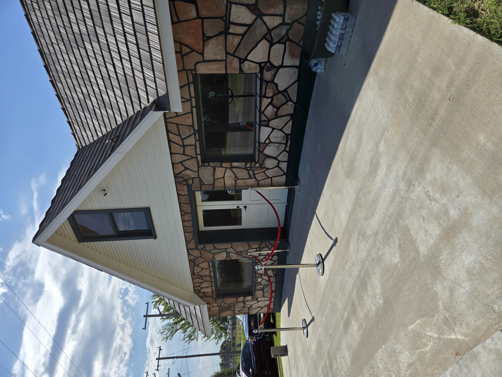

One of my favorite places along Route 66 is a site known as the Threatt Filling Station. For generations, it has functioned as a safe place for Black travelers to rest just off Route 66. Oklahomans weren't the only ones to use it. People from all over the country stoppped at the filling station, including many African American celebrities.
As I've expressed before, I just so happened to find out about this place while searching through UCO's archive for other items. Ever since then, I've had a fascination with the station and the culture around it. Though this location was never listed in the Green Book, a popular guide for Africans Americans for safe travel, Threatt Filling was often spread through word of mouth.
More about Threatt Filling Station.
kbezdek.github.io © 2026 by Kayden Bezdek is licensed under CC BY-ND 4.0